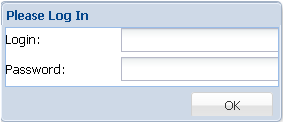

Приложение «Автоматизированная система хранения и доступа к документам» открывается в Web-браузере. Вход в систему осуществляется под учетной записью (логин и пароль) пользователя.
В случае неправильного ввода идентификационной информации появится сообщение об ошибке и будет отказано во входе в систему.
После входа в систему все метаданные и действия, связанные с редактированием, будут идентифицироваться с именем того пользователем, который прошел аутентификацию и произвёл соответствующие действия. Пользователь автоматически станет автором метаданных загружаемых документов или изменений, вносимых в метаданные, а также автором добавляемых графических объектов для привязки документов.
Начальный интерфейс АСХД имеет следующий вид.
На верхней панели справа от названия Приложения размещается идентифицированное имя пользователя, под которым был осуществлён вход в систему.
Нижняя панель - панель главного меню Приложения - содержит три раскрывающиеся меню Document, Map и Options, меню Help для вывода в отдельном окне справочной информации и три кнопки: - Find Documents (Поиск документов), - Register (Регисрировать новый документ), - Documents Catalog (Каталог документов), дублирующие команды меню Document.
При начальном запуске программы в рабочем окне интерфейса по умолчанию загружаются два дополнительных окна: Find Document (Поиск документа) и карта Caspian Sea, которые по желанию можно закрыть или поменять на другие.